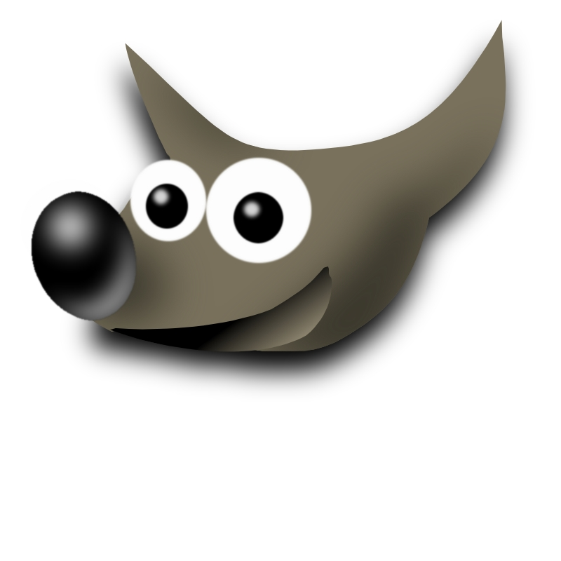

輕輕鬆鬆入門 GIMP

GIMP 的全名為 GNU Image Manipulation Program ，是一套開放源碼的影像處理軟體。GIMP 可以輕易對數位影像進行修飾合成，其功能如同常見的商業軟體 Photoshop、PhotoImpact 。GIMP 除了基本的影像處理外，也可以藉由外掛程式來擴充功能。
本課程共三小時，講師是陳飛亨 ( Freddi )，Freddi 為自由軟體鑄造場的成員之一，主要負責營運推廣，個人專長在多媒體應用、數位學習系統及教學檔案撰寫等。詳細的內容與報名資訊如下：
- 時間：2008/11/29 (六)
- 對象：對自由軟體有興趣者
- 人數：每班約 20 人 ( 實機操作 )
- 平台：Linux or Windows ( 依實際狀況再進行調整 )
- 費用：全程免費，但無供餐。
- 網址：https://whoswho.openfoundry.org/workshop/details/8.html